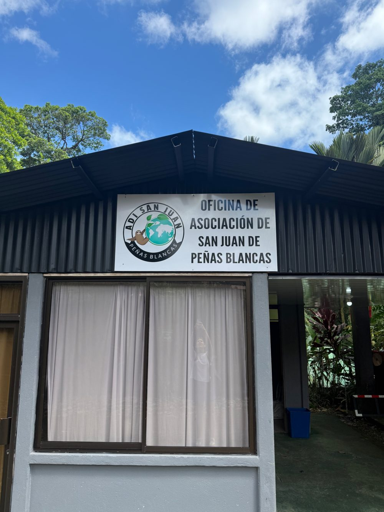

Quiénes somos, cómo estamos organizados, y en qué estamos trabajando.
La Asociación de Desarrollo Integral de San Juan de Peñas Blancas es una organización comunitaria que trabaja por el bienestar y el desarrollo de nuestra comunidad. A través de proyectos, iniciativas y alianzas, buscamos responder a las necesidades de San Juan y crear nuevas oportunidades para sus habitantes.

La ADI se fundó en 2010. Nombres y contactos actualizados por la propia Asociación.
Coordina la respuesta ante situaciones de riesgo y desastres naturales en la comunidad.
Trabaja junto a la Fuerza Pública para fortalecer la seguridad comunitaria.
Iniciativa mensual en alianza con la ADI de La Fortuna, que recolecta el material reciclable y lo transforma en bloques plásticos y otros productos.
La huerta comunitaria se cederá a la escuela para educación ambiental y alimentación saludable.
Construcción de un aula dedicada exclusivamente a talleres productivos y formación técnica.
Desarrollo de vivienda accesible para familias de la comunidad.
Organizaciones que trabajan junto a la ADI y la comunidad de San Juan.
Centro de investigación y educación de Texas A&M University, ubicado junto a San Juan.
Sitio webOperador de turismo educativo que trae grupos internacionales a conocer la comunidad.
Sitio webEmpresa de turismo sostenible enfocada en experiencias con comunidades locales.
Sitio web